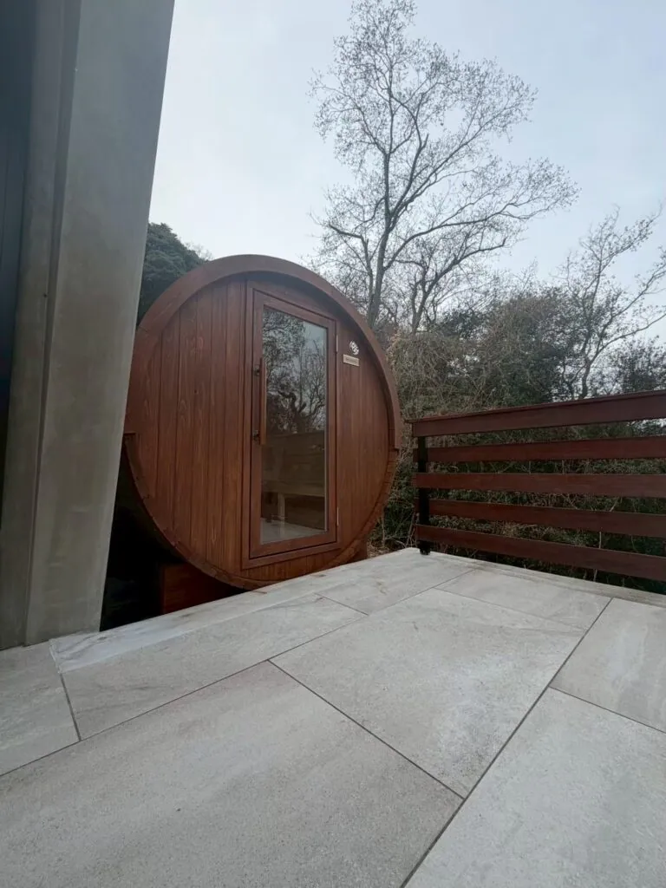
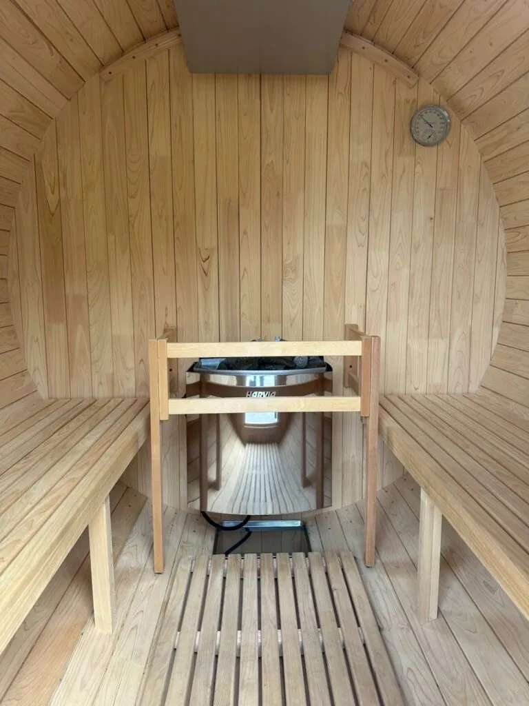

「90％、95％は稼働しているからね。サウナがある分、宿泊代も高く設定できています」
そう語ってくださったのは、貸別荘「Soothe Forest」を運営するM様です。
プライベートな空間で非日常を味わう貸別荘において、サウナは滞在価値を左右する重要な設備の一つです。
Soothe Forest様では、バレルサウナの導入後、90〜95％という高いサウナ稼働率を記録。サウナという付加価値によって、宿泊単価の向上にもつながっています。
本記事では、40代を中心としたお客様から支持を集める同施設の事例をもとに、バレルサウナが施設運営にどのような変化をもたらしたのかをご紹介します。
導入後の主な成果
- サウナ稼働率は90〜95％
- サウナ導入により宿泊単価が向上
- 40代のご夫婦やカップルを中心に利用
| 導入施設 | 貸別荘 Soothe Forest様 |
|---|---|
| 導入目的 | 宿泊・滞在価値の向上 |
| 主な利用層 | 40代を中心とした2名利用 |
| 熱源 | 電気ストーブ |
| お話を伺った方 | Soothe Forest M様 |
なぜバレルサウナだったのか？
貸別荘ならではの強みをつくるため
貸別荘やプライベートヴィラにおいて、お客様から選ばれるための「強み」をつくることは、施設運営における大きな課題の一つです。
Soothe Forest様では、宿泊されるお客様にワンランク上のリラックスタイムを提供するため、サウナの導入を検討されていました。
自然豊かな景観になじむ設備
Soothe Forest様が重視したのは、自然豊かな環境での滞在を楽しむ貸別荘の景観を損なわないことでした。
木製のバレルサウナは屋外へ設置でき、周囲の自然になじみながら、施設全体の魅力を高める設備として適していました。
Rink SAUNAは、貸別荘やリゾートホテルをはじめ、幅広い施設の景観になじむ上質な佇まいを備えています。
単にサウナを設置するだけでなく、滞在価値そのものを高める設備としての役割が求められていました。
Rink SAUNAを選ばれた決め手
施設導入で重視された3つの条件
- 日本の気候を考慮した耐久性
- 連続稼働を支える高い保温性
- 施設の景観になじむ純国産ヒノキの質感
日本の気候を考慮した耐久性
宿泊施設で日々稼働させる設備には、見た目の美しさだけでなく、耐久性と運用コストのバランスが求められます。
Rink SAUNAは、梅雨の湿気や冬の乾燥など、日本特有の気候を考慮して設計された純国産ヒノキのバレルサウナです。
長期間にわたって快適に使用できるよう設計されていることが、施設運営における安心感につながりました。
60mm厚・3重積層の構造
純国産ヒノキが持つ豊かな香りや美しい木目に加え、60mm厚・3重積層の堅牢な構造も、選定時の重要なポイントでした。
木材を複数の層に重ねた構造によって、温度や湿度の変化による歪みや隙間が生じにくいよう配慮されています。
連続稼働を支える保温性
宿泊施設では、決められた時間に安定してサウナを利用できる運用体制が欠かせません。
熱が逃げにくい高い保温性を備えているため、タイマー管理による長時間の運転でも、サウナ室を効率よく温められる点が導入の決め手となりました。
導入時のエピソード
運用しやすい電気ストーブを採用
宿泊施設へのサウナ導入にあたり、熱源には電気ストーブを採用されました。
薪ストーブのように火や薪を管理する必要がなく、スイッチやタイマーで運転時間を調整できることが大きなメリットです。
お客様が手軽に利用でき、無人または少人数で運営される貸別荘のスタイルにも適しています。
製造から施工まで一貫して対応
Rink SAUNAでは、木材の調達から製造、配送、施工までを一貫して管理する体制を整えています。
施設ごとの設置条件や細かな要望を確認しながら進めることで、スムーズな導入につながりました。

導入後の変化
導入後に生まれた変化
- サウナ稼働率は90〜95％
- 宿泊単価の引き上げに成功
- 毎日15時からタイマーで運転
サウナ稼働率90〜95％を記録
サウナの導入後、Soothe Forest様では、90〜95％という高いサウナ稼働率を記録しています。
宿泊されるお客様の多くがサウナを利用しており、特に40代のご夫婦やカップルなど、2名での利用を中心に好評を得ています。
宿泊単価の向上にも貢献
ビジネス面での大きな変化は、サウナという付加価値によって、宿泊単価の引き上げにつながったことです。
サウナを含めた滞在体験に価値を感じていただくことで、施設の魅力と収益性の双方を高める結果につながっています。
タイマー管理で運営の負担を軽減
日々の運用のしやすさも、導入後に感じられたメリットの一つです。
Soothe Forest様では、毎日15時からタイマーで電気ストーブを稼働させ、夜間まで利用できる状態を整えています。
スタッフが利用のたびに火を入れる必要がなく、決められた時間に安定したサウナ環境を用意できています。
高い保温性を備えた構造と電気ストーブを組み合わせることで、運営側の負担を抑えながら、お客様へ快適なサウナ体験を提供しています。
まとめ
貸別荘Soothe Forest様では、純国産ヒノキのバレルサウナを導入したことで、滞在価値の向上だけでなく、サウナ稼働率や宿泊単価にも変化が生まれました。
90〜95％という高い稼働率を支えているのは、サウナそのものの魅力に加え、高い保温性や電気ストーブによる運用のしやすさです。
施設の景観になじみ、運営の負担を抑えながら滞在体験を高められるバレルサウナは、集客力や宿泊単価の向上を目指す施設にとって、有力な選択肢の一つとなります。